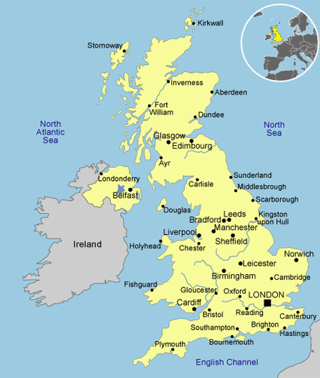

England
About
The country of England is location in north-west Europe and is an island country approximately 20 miles off mainland Europe. England is part of the United Kingdom and accounts for about 84% of the population of the UK. England was founded in 927 as part of the Kingdom of England but didn't become their own political identity until 1707. Some of the things that England is known for is the British Royal Family which many countries don’t have a royal family anymore if they did at one point. England is also known for its many travel destinations like the city of London or Manchester, as well as famous people like William Shakespeare. England is considered the home of football, which we call soccer. There are plenty of tourist attractions throughout the country, the most notable being in London. Since England is in Europe, they have some castles that are known to be popular tourist spots.
Locations
London
The city of London is located in southeast England on the River Thames. London is the capital city of England and the United Kingdom, being the largest city in the UK and all of Europe. London is known for its history and tourist attractions. The Tower Bridge (pictured above) is one of their biggest attractions, which as the name states, has towers on it. Another major attraction is Buckingham Palace which is the Queen’s residence that has over 775 rooms! One of the most iconic spots in London is Big Ben clocktower (pictured below) which is part of the houses of Parliament and is where the legislative branch of the country is located. Something that is unique about London is their transportation. The most recognizable transportation being the red double decker bus which is a London icon.